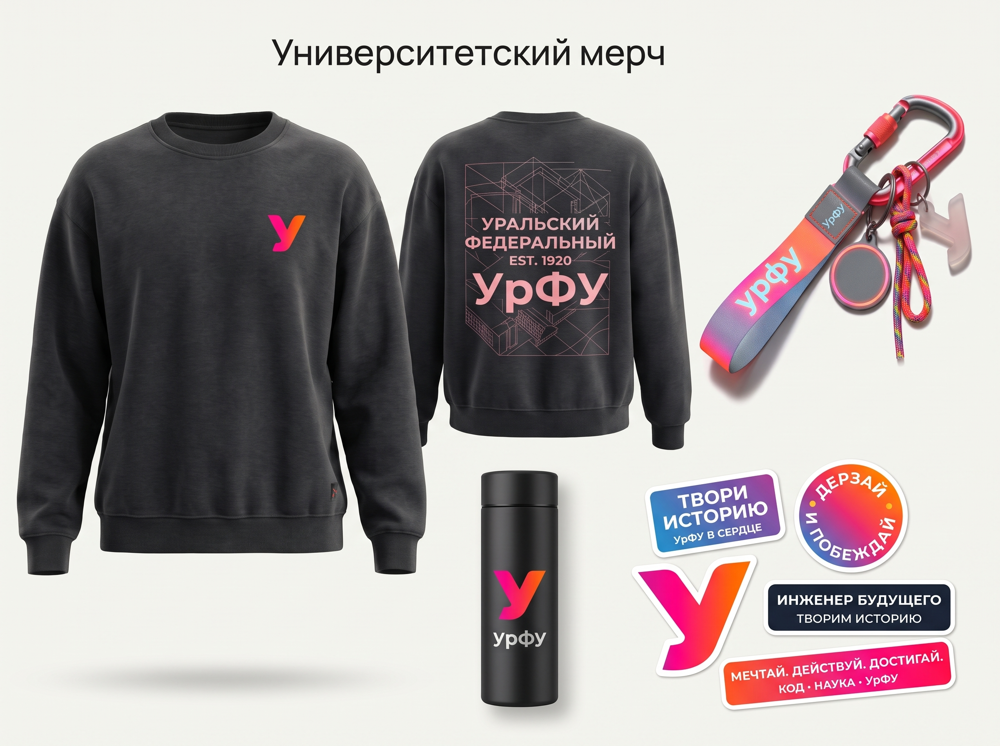
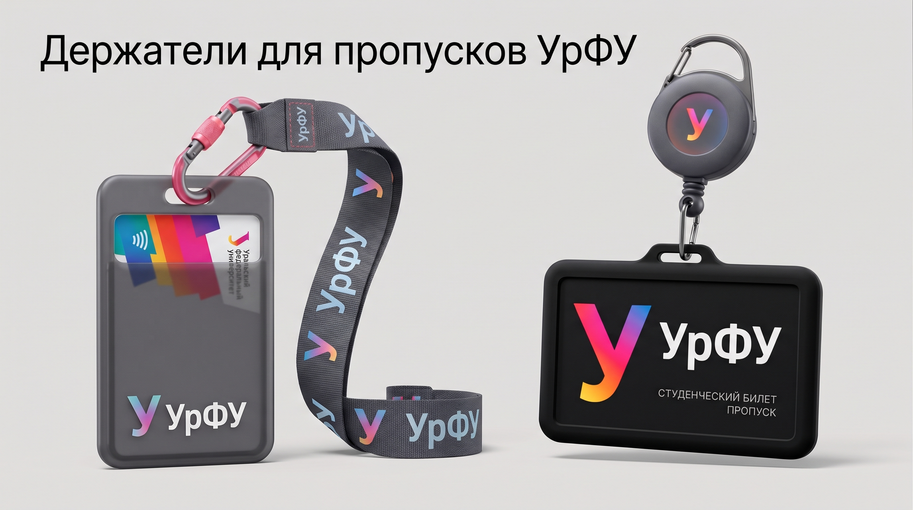

Цифровая сервисная экосистема Уральского федерального университета
Мы отказались от устаревшей концепции «сайта-справочника» и спроектировали единую интерактивную платформу из 11 связанных страниц. Вместо статичных текстов — работающие калькуляторы поступления, сквозное сохранение данных между страницами, симулятор стипендий и полноценная бренд-среда кампуса.
По условиям требовался редизайн главной + минимум 10 страниц. Мы разработали 11 полноценных интерактивных экранов, связанных единой шапкой и памятью браузера.
ЕГЭ+ИД, БРС, кампус, Эндаумент, справочник
Локализация + ГОСТ режим слабовидящих А+
От витрины новостей — к сервисному продукту
Почему традиционные порталы вузов вызывают стресс у абитуриентов и как мы изменили саму парадигму взаимодействия.
Абитуриент вынужден скачивать многостраничные PDF-приказы, чтобы узнать баллы за медаль или ГТО.
Разделы школьников, абитуриентов, расписание и наука живут отдельно и не обмениваются данными.
Компании не видят понятного окна для заказа НИОКР, студенческих кейсов или вклада в Эндаумент.
Отметил галочки ИД — сразу увидел сумму баллов и доступные бюджетные места.
Все 11 страниц работают как единое приложение: тема, шрифт А+, язык и баллы сохраняются.
Mega-Menu сразу делит трафик на 6 потоков: Школьникам, Абитуриентам, Студентам, Науке, Партнёрам, Контактам.
Цифровой интерфейс связан со средой кампуса: мерчем, серией Reflective и пропусками.
Трансформация ключевых экранов: Старый urfu.ru vs Новая экосистема
Три ключевые пары пользовательских сценариев, показывающие качественный скачок в эргономике и конверсии.
Перегруженное 3-уровневое текстовое меню из 45+ ссылок, устаревший слайдер баннеров, отсутствие быстрого поиска по программам и корпусам.
Чистая Bento-сетка (ГУК + ДОД + Цифры + Интерактивная карта корпусов), 3-колоночное Mega-Menu и мгновенный Spotlight-поиск по клавише /.
Статичные таблицы проходных баллов прошлых лет и отдельные PDF-файлы с перечнем индивидуальных достижений без автоматического суммирования.
Интерактивный чек-лист ИД с автоматическим контролем лимита +10 баллов РФ и сквозной синхронизацией с калькулятором ЕГЭ через localStorage.
Формулы расчета БРС описаны только в текстовых положениях, нет калькулятора заселения в «Новокольцовский» и витрины официального мерча.
Живой симулятор БРС (60+40) с прогнозом стипендии ПГАС, калькулятор стоимости общежития и полноразмерный шоурум мерча Reflective и пропусков.
Идеи дизайна: почему выбрана Bento-сетка и энергетический градиент
Каждое визуальное решение подчинено читаемости (контраст ≥ 4.5:1), скорости восприятия и образу технологического вуза.
Уральский характер и энергия науки
Фирменный градиент от рубиново-розового (#FF1E56) к огненно-оранжевому (#FF7A2F) символизирует сплав молодой энергии студентов и индустриальной мощи Урала.
Модульная архитектура Bento Grid
Вместо длинных «простыней» текста информация упакована в функциональные капсулы со скруглением 28px–32px и микро-лифтингом при наведении.
Self-hosted Inter и честная Dark-тема
Шрифт Inter (woff2) с минимальным кеглем 12px делает таблицы ID и калькуляторы идеально читаемыми, а темная тема на оттенках #0F1420 бережет зрение.
11 взаимосвязанных страниц с уникальными компонентами
Mega-Menu, карта корпусов, калькулятор ЕГЭ+ИД, поиск Spotlight (/), 4 языка.
Навигатор по классам (5–11), СУНЦ УрФУ, олимпиада «Изумруд» и Тест-драйв.
4 ступени обучения, калькулятор ИД (лимит +10 б.), живые списки по ID.
Каталог всех 13 подразделений с фильтром по профилю и поиском по работодателям.
Расписание по группам (РИ, ЭУ, УГИ), симулятор БРС (60+40) и виды стипендий.
Общежития на 8 500 мест, калькулятор стоимости заселения, ДВВС и медцентр.
Логотипы УрФУ, свитшоты, эффект вспышки Reflective, пропуска и стела навигации.
Уральский МНОЦ, 120+ лабораторий «Приоритет-2030», заказ НИОКР и стартап-студия.
4 трека сотрудничества, фильтр 500+ партнеров, Центр карьеры и калькулятор Эндаумента.
Рубрикатор новостей науки и кампуса, модальное чтение статей и QR-регистрация.
Горячие линии, живой поиск по 9 корпусам с маршрутами и Цифровая приёмная 24/7.
Все 11 файлов связаны единым модулем шапки, поиска и состояния.
Единый компонент шапки, Mega-Menu и Spotlight-поиск по «/»
Как мы унифицировали навигацию, тему (иконки солнца/луны), кнопку А+ и выбор языка на всех 11 страницах.
Вся глубина раздела без перезагрузки
Раскрывается при hover и focus-within (доступно с клавиатуры): треки обучения, калькуляторы и промо-баннер.
Поиск по клавише «/» на любой странице
Модуль search.js работает сквозным образом на всех 11 страницах, мгновенно находя якоря (например, #id-calculator).
Доступность по стандарту WAI-ARIA
Все модальные окна снабжены role="dialog", aria-modal="true", удержанием фокуса внутри окна и закрытием по Esc.
Сквозной калькулятор ЕГЭ + ИД (с контролем лимита +10 баллов РФ)
Как мы связали страницы school.html, applicants.html и index.html через модуль storage.js.
Ученик выбирает свой класс (5–7, 8–9 или 10–11) и получает релевантные олимпиады («Изумруд» с правом БВИ), отбор в СУНЦ УрФУ или проектную смену в «Сириусе» (+4 балла ИД).
Наш алгоритм Math.min(10, rawSum) наглядно контролирует законный потолок РФ (не более +10 баллов) и записывает его в KEYS.ID_BONUS.
При переходе на Главную баллы ИД уже подставлены к ползунку ЕГЭ! Карточки направлений мгновенно пересчитывают статус прохождения на бюджет.
Протестируйте расчет конкурсного балла:
Умное расписание ИОТ, симулятор БРС и кампус «Новокольцовский»
Превращаем сайт университета в ежедневного помощника для 36 000+ студентов (schedule.html + campus.html).
Симулятор Балльно-рейтинговой системы (БРС)
Калькулятор заселения в «Новокольцовский»
8 500+ мест в ячейках гостиничного типа, Дворец водных видов спорта, медцентр и интерактивный расчет условий проживания для олимпиадников, бюджетников и контрактников.
Мгновенное переключение групп (ИРИТ-РтФ, ИнЭУ, УГИ)
Карточки расписания показывают время пары, дисциплину, корпус и точный номер аудитории (Р-318, ГУК-209, ДВВС Новокольцовский).
Университетский мерч и светоотражающая серия Reflective

На груди — минималистичный знак «У». На спине — 3D-сетка архитектурного каркаса ГУК и принт «УРАЛЬСКИЙ ФЕДЕРАЛЬНЫЙ • EST. 1920 • УрФУ».
Розовый карабин, стропа со светоотражающим логотипом «урфу», круглый NFC-токен и матовый 3D-шарм «У».
Матовый черный термос и набор виниловых стикеров: «Твори историю», «Инженер будущего», «Дерзай и побеждай».
Держатели для пропусков УрФУ и интерактивные пилоны корпусов
Как фирменный стиль помогает первокурснику ориентироваться в Главном учебном корпусе (Мира, 19) и общежитиях.

Полупрозрачный графитовый чехол для бесконтактной кампусной карты, лента с паттерном «У УрФУ» и металлический карабин.
Жесткий корпус «СТУДЕНЧЕСКИЙ БИЛЕТ • ПРОПУСК» с вытяжным ретрактором для быстрого прикладывания к турникетам.
На странице students-brand.html реализован интерактивный макет корпусного пилона с построением маршрута по этажам ГУК.
R&D для промышленности, 13 институтов и Эндаумент-фонд УрФУ
Как страницы science.html, partners.html и institutes.html привлекают индустриальные контракты и меценатов.
Заказ контрактных исследований и реверс-инжиниринга в 120+ лабораториях УМНОЦ.
Компании ставят реальные ИТ и инженерные задачи студенческим командам УрФУ на семестр.
СКБ Контур, Сбер, Росатом, Яндекс, ТМК, УГМК, ЕВРАЗ, Синара — привязаны к 13 институтам.
Подача заявки на грант «Студенческий стартап» и работа в молодежных КБ.
Калькулятор Эндаумент-фонда УрФУ
Сам вклад бизнеса или выпускника остаётся неприкосновенным, а ежегодный инвестиционный доход (~12%) идёт на стипендии и лаборатории:
Инклюзивный режим «А+», 4 языка мира и Цифровая приёмная 24/7
Учет требований государственных образовательных порталов и потребностей 4 600+ иностранных студентов УрФУ.
Режим для слабовидящих (А+)
На всех 11 страницах в шапке встроена кнопка «А+», skip-link и focus-visible. При нажатии размер шрифта увеличивается до 112.5% без поломки верстки.
localStorage между страницами.Локализация: RU / EN / ZH / AR
Реализован мгновенный перевод ключевой навигации и главной страницы на Русский, Английский, Китайский (中文) и Арабский (العربية) языки с сохранением выбора.
applicants.html.Справочник корпусов и тикеты
Живой поиск по учебным корпусам и деканатам со схемой проезда и генерация уникального номера обращения #URFU-XXXXXX.
Ожидаемый эффект для УрФУ и быстрый запуск страниц
Почему разработанная экосистема готова стать реальным фундаментом нового портала университета.
Абитуриенты сами считают баллы ЕГЭ+ИД, видят свой ID и находят корпуса.
Предзаявка подается прямо из карточки подходящей программы в 1 клик.
Чистая сборка Vite + PostCSS, локальные WebP-изображения и семантическая верстка.